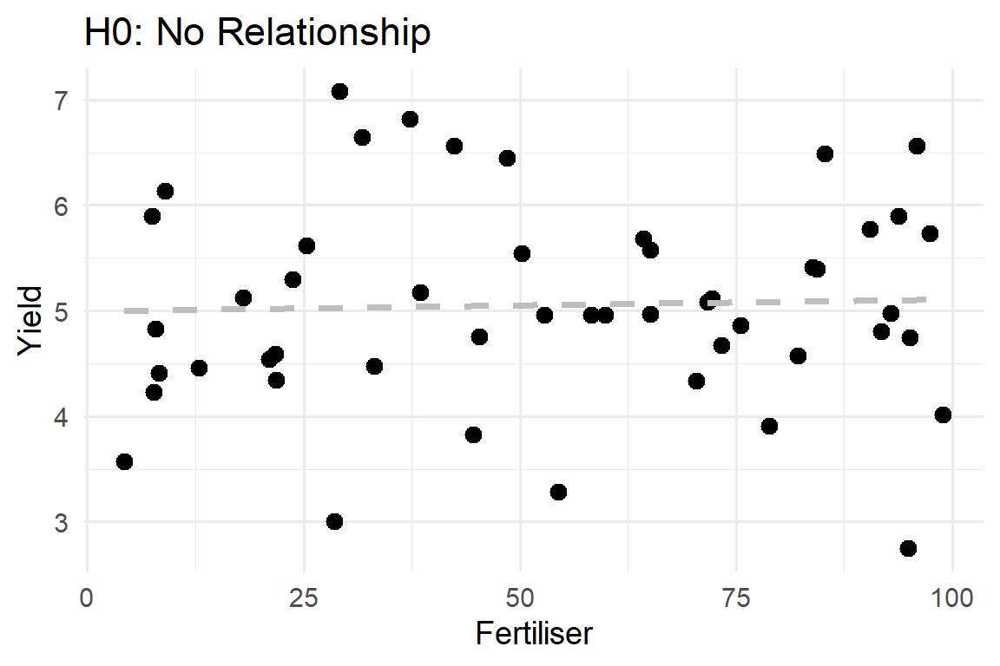
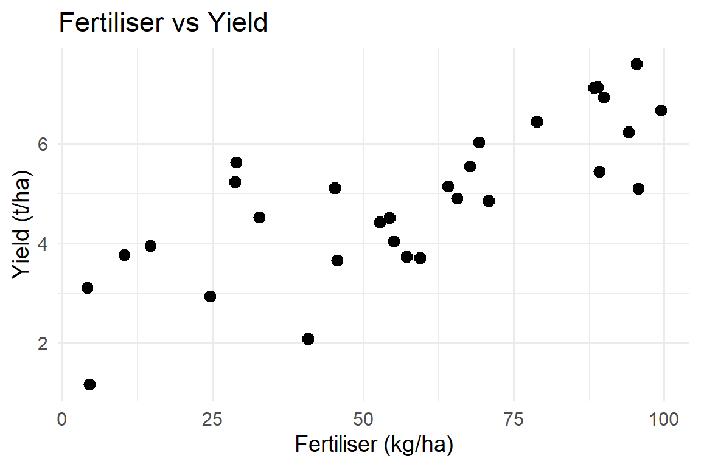
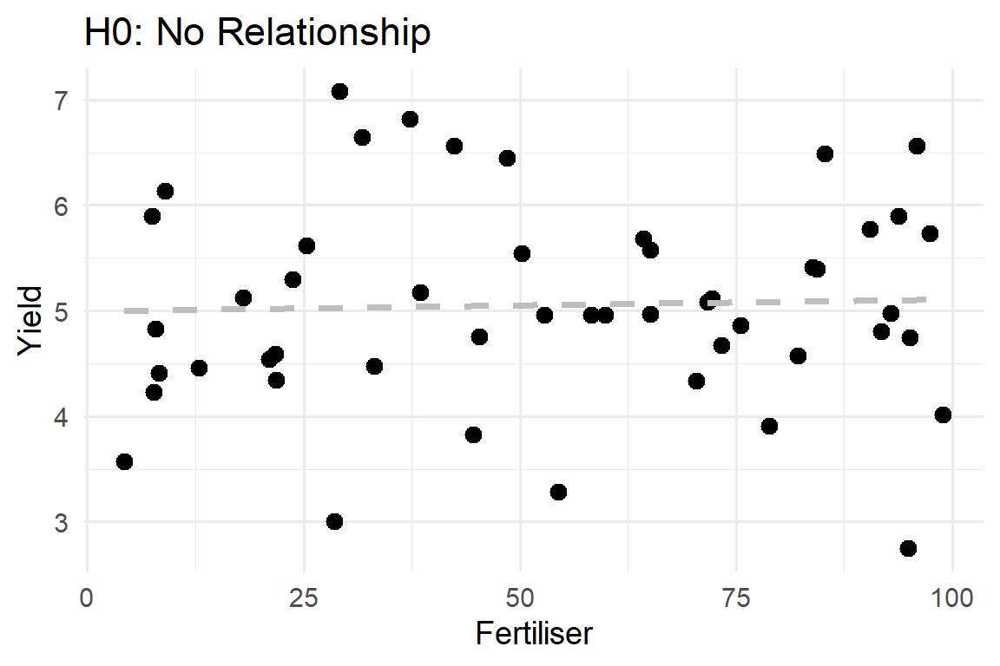
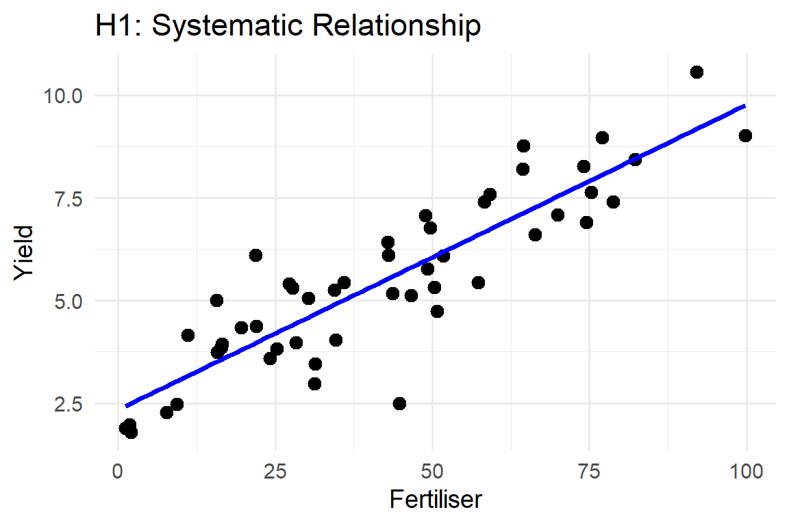
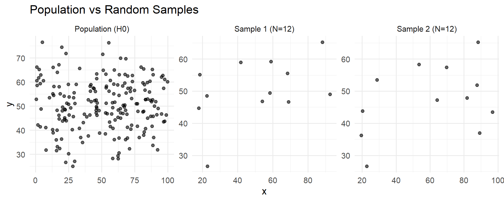
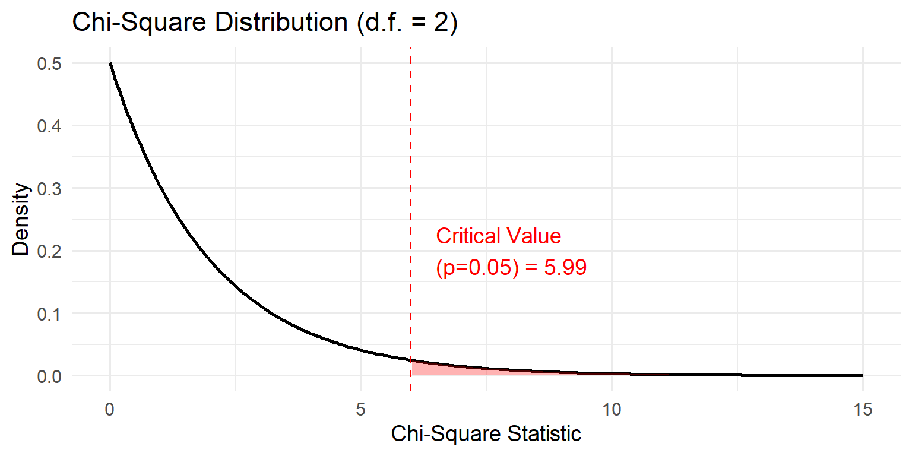

Null/Alternative Hypotheses, p-values, degrees of freedom and reporting results
In this session we will:
Most basic statistical tests return three key things:
In SPSS, you typically see these in the same row of a table:
P-values just find where your value falls in the range of that distribution.
2-tailed vs 1-tailed
Testing Normality
Every statistical test follows this pattern, but see, the assumption is that you have otherwise normal mundane conditions, not a twisted situation, hence the focus on testing normality.
We might ask:
Is there a relationship between yield and fertiliser application rate?
We collect data on fertiliser (kg/ha) and yield (t/ha) for a number of plots and create a scatterplot.
For this example:
Null hypothesis (H₀):
There is no linear relationship between yield and fertiliser rate in the population.
Alternative hypothesis (H₁):
There is a linear relationship between yield and fertiliser rate.
Graphically, H₀ says: if we looked at all possible plots in the population, the cloud of points would show no systematic trend – just randomness around a flat line.

H₁ says: in the population, as fertiliser changes, yield tends to move up or down consistently (positive or negative slope).

The p-value answers the question:
If the null hypothesis were true, how likely is it that we would see a result this extreme (or more extreme) just by chance in our sample?
For correlation:
Typical rule of thumb:
Suppose our analysis gives:
Interpretation:
In SPSS, you’d see:
Pearson Correlation = .860Sig. (2-tailed) = .000N = 16Imagine a very large population of insects where body size and number of eggs are not related at all (H₀ true). Now we take random samples from that population.
Even if the true relationship is zero, some samples will look slightly positive, some slightly negative, just by chance.
When we estimate the sample mean, we impose the rule that the deviations from that mean must sum to zero:
\[ \sum (x_i - \bar{x}) = 0 \]
This constraint removes one independent direction in which the data could have varied.
The sample no longer behaves like (N) independent draws from a random process. It behaves like (N-1).
Because variance measures how much free randomness is in the system, it must divide by (N-1), not (N), to reflect the correct amount of independent information.
Look at this formula for sample variance:
\[ s^2 = \frac{1}{N-1} \sum_{i=1}^{N} (x_i - \bar{x})^2 \]
Remember, (N-1) just means;
Once \(\bar{x}\) is fixed, the deviations \((x_i - \bar{x})\) must sum to zero for \(\bar{x}\) to be the sample mean.
So if you give me N−1 random deviations, the last one is fixed because it has to make the sum zero so the mean comes out right.
That means the data only have N−1 truly independent directions to vary in.
Because variance is supposed to measure how much independent variability there is, the formula must also use N−1 in its denominator to match the actual degrees of freedom in the data
Suppose I tell you: “I have 5 numbers, and their mean is 5.6”.
You can pick the first number to be anything (e.g., 1). It is free to vary.
You can pick the second (e.g., 3).
You can pick the third (e.g., 5).
You can pick the fourth (e.g., 9).
But for the fifth number, you have no choice.
If the mean is 5.6, the sum must be 28.
The sum of the first four is \(1+3+5+9 = 18\).
The last number must be 10 (\(28 - 18\)).
Because we calculated the mean from the data, we used up one degree of freedom. We have \(N-1\) (i.e., 4) independent choices left.
The more parameters you fix, the more degrees of freedom you use up
The t-distribution adjusts its shape based on the degrees of freedom.
With fewer degrees of freedom, there is more sampling uncertainty, so the distribution develops heavier tails.
This means a t-value must be more extreme to be considered rare and reach a conventional threshold like (p < 0.05).
As degrees of freedom grow, the uncertainty shrinks, and the t-distribution collapses toward the normal, making evidence easier to detect.
Degrees of freedom tell us how much independent information was truly available after estimating parameters.
They directly determine how strong your test statistic must be before you can claim evidence against a null hypothesis.
Fewer degrees of freedom → more doubt → stricter thresholds.
More degrees of freedom → less doubt → tighter inference.
Consider a questionnaire completed by 95 students about their mode of transport to university:
| Car | Bus | Foot | Row total | |
|---|---|---|---|---|
| Male | 17 | 18 | 21 | 56 |
| Female | 24 | 8 | 7 | 39 |
| Column total | 41 | 26 | 28 | 95 |
Question:
Is there an association between gender and mode of transport?
In SPSS, you would use Analyze → Descriptive Statistics → Crosstabs… and request a Chi-square test.
For a chi-square test of association in an r × c table:
[ = (r - 1)(c - 1) ]
In our example:
So:
[ = (2 - 1)(3 - 1) = 1 = 2. ]
Interpretation:
Chi-square test statistics are compared to a chi-square distribution that depends on d.f.:
SPSS does this comparison for you and reports:
Asymp. Sig. (2-sided)).A clear reporting sentence includes:
Example:
There was a significant association between gender and mode of transport
(χ² = 8.34, d.f. = 2, p < 0.02, N = 95).
If p had been ≥ 0.05, we would conclude:
There was no evidence of an association between gender and mode of transport
(χ² = …, d.f. = 2, p = …, N = 95).
In SPSS, these are read from the Chi-Square Tests table and the Crosstabulation table.
For almost any test you run (correlation, t-test, ANOVA, chi-square), SPSS output will always give you:
Sig.).When reading output:
A statistical test always returns:
P-values tell us how surprising our data are if the null hypothesis is true.
Degrees of freedom measure how many pieces of information are free to vary: